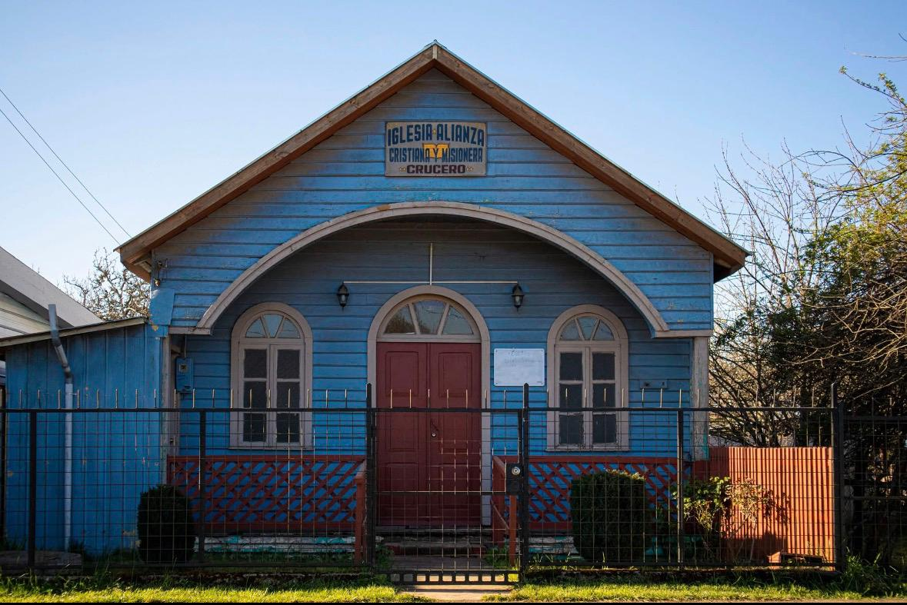
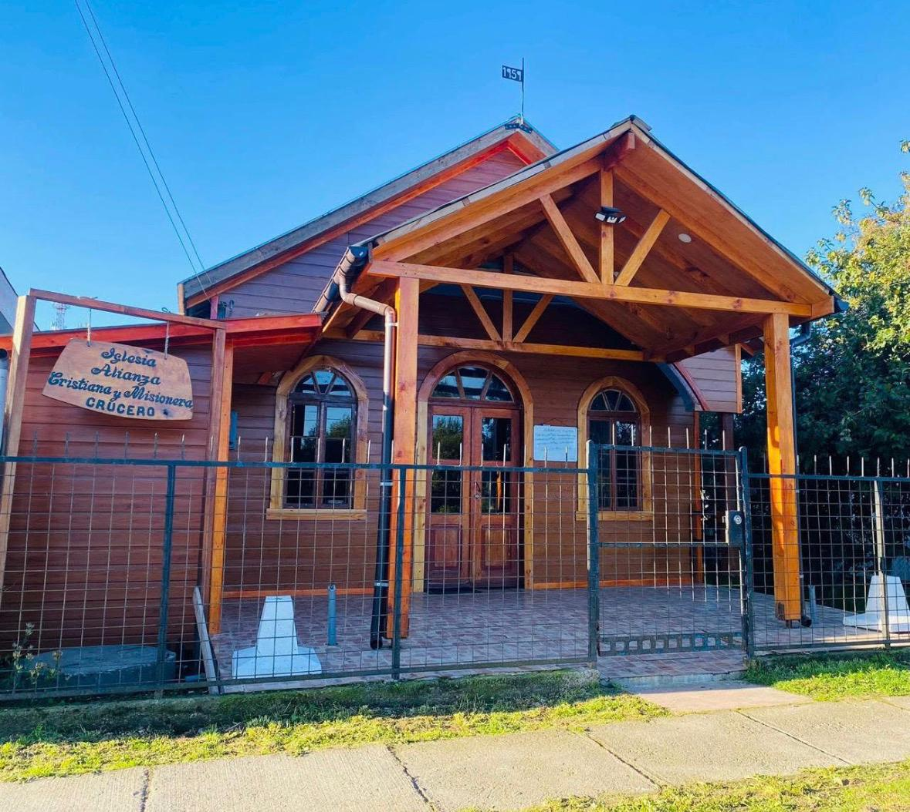

Bienvenido a nuestra familia
Iglesia ACyM Crucero
Cristo Salva
Sana, Santifica
Y Rey que Viene Pronto!
Una comunidad unida por el amor de Cristo, buscando hacer Su voluntad y llevar Su mensaje de esperanza a cada rincón de nuestra localidad.
Nuestra Historia
94 Años de Fe y Perseverancia en Crucero
Aniversario de la Iglesia Alianza Cristiana y Misionera de Crucero (1931 - 2025)
Al conmemorar el 94° aniversario de nuestra amada Iglesia Alianza Cristiana y Misionera en Crucero, recordamos con gratitud la fidelidad de Dios y el legado de fe de aquellos que sentaron las bases de esta obra... (rest of history text from precursors continues here)...
Al mirar atrás, vemos la mano de Dios en cada paso... (text remains)


Calendario de Cumpleaños
Selecciona a un hermano para ver su mensaje de felicitación y copiarlo a WhatsApp.
Próximo Cumpleaños
Cargando...
--